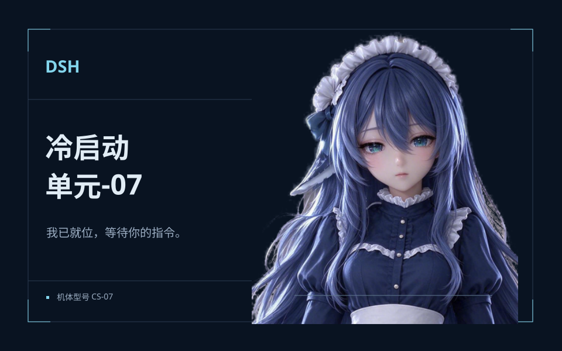

指挥工作区/
桌宠行动方案
已回复
单元-07指挥官，结果已就绪。
草稿保留在本页⌘ Enter 发送 · Shift Enter 换行
同一角色贯穿皮肤封面、设置横幅、开场与陪伴位。

深海蓝指挥台，银蓝链路与清楚的执行回执。她已就位，日常工作由你指挥。
声音、界面动态与角色呼应分别控制。桌宠道具随实际使用动作出现，现有设置与皮肤库由底座接入。
导航、对话、文件、状态、设置与 DSH 功能，共 56 枚。统一 24 单位画布与 1.55px 线宽。
机械姬与指挥官的关系贯穿开场、工作区、桌宠和反馈。功能名称保持清楚；角色在合适的时刻回应。
| 时刻 | 视觉与回应 | 控制与边界 |
|---|---|---|
| 进入主题 | 科研设施供能、单元-07登场与报到、进入工作区 | 12.5 秒有声开场，可跳过，也可查看静态画面 |
| 新建 / 切换会话 | 建立新的任务上下文，导航定位同步 | 轻量展开，保留草稿；切换历史不重播完成演出 |
| 发送 / 执行 | 指令进入记录，状态线作有限两次扫描 | 执行状态持续可读；停止优先于演出 |
| 需要决定 | 琥珀色提示原问题，单元-07 请求你的决策 | 问题持续保留，不用闪烁或反复播报催促 |
| 完成 | 回执锁定、陪伴位一次短回应、清脆提示音 | 反馈留在回执与陪伴位，避让正文和输入 |
| 异常 / 中止 | 中断原因、已保留内容与恢复入口一起出现 | 即刻取消声画；保留输入与阅读位置 |
| 附件 / 引用 | 带编号的资料签对接出处 | 只在主动打开引用后发生，来源始终可查 |
深海蓝外壳、银蓝选中接点与清楚的层级。陪伴位使用你选定的第四张母版，不侵入主要阅读区。
用户是指挥官，信息按照请求、执行与结果组织。真实 DSH 助手保留自己的身份，不强行把每个模型都改写成机械姬。
聚焦时接点亮起，附件和发送保持明确。没有循环闪烁、键盘噪音或占据输入区的角色演出。
沿用已完成的完整图标家族，以统一笔画、接点和银蓝辅助色融入控制台。普通动作保持熟悉的名称。
需要处理时保留实际问题和选择；错误给出恢复入口。角色回应服务状态，声音和动态可以独立关闭。
书杯随拿取、使用、收起出现。缺少握持与使用动作时不陈列道具，也不把未制作的喝茶、读书标为可执行能力。
开场、陪伴位、设置横幅与皮肤封面均引用第四张母版。本页演示界面与状态；真实模型行为、原生接入及设置持久化由现有底座承接。